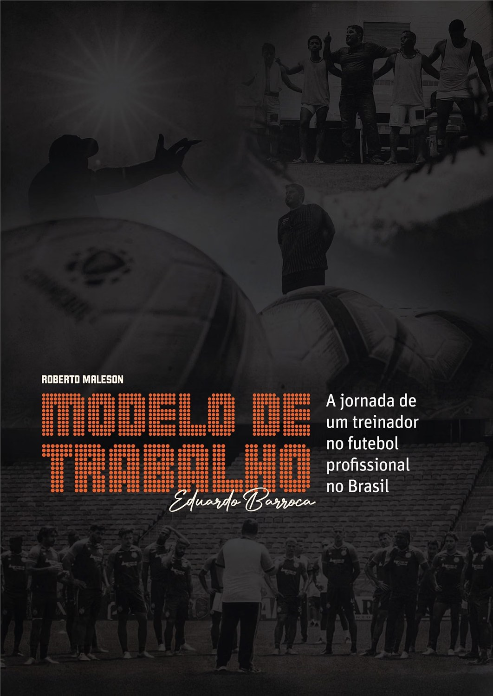
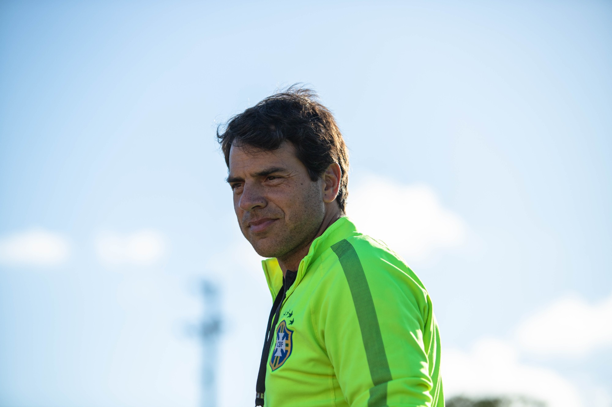

Os 7 Hábitos das Pessoas Altamente EficazesStephen R. Covey
Os 7 Hábitos das Pessoas Altamente EficazesStephen R. Covey Temporada 2026, inscrições abertas
Temporada 2026, inscrições abertas
Mentoria Diário do Treinador Conheça, aplique e transforme
Descubra o poder que o conhecimento pode trazer para a sua carreira e sua vida.

Mindset
Leitura Guiada
Novas Habilidades
Desenvolvimento Profissional
Desenvolvimento Pessoal
Network
Direcionamento
Plano de Ação
Mindset
Leitura Guiada
Novas Habilidades
Desenvolvimento Profissional
Desenvolvimento Pessoal
Network
Direcionamento
Plano de Ação
Desenvolvimento Pessoal
Network
Direcionamento
Plano de Ação
Mindset
Leitura Guiada
Novas Habilidades
Desenvolvimento Profissional
Desenvolvimento Pessoal
Network
Direcionamento
Plano de Ação
Mindset
Leitura Guiada
Novas Habilidades
Desenvolvimento Profissional
A Mentoria Diário do Treinador é especializada em Desenvolvimento Profissional e Pessoal para Treinadores e profissionais do futebol.
Livro do Momento

O sucesso no futebol não é sorte. É método.
Modelo de Trabalho
A jornada de um treinador no futebol profissional no Brasil
Roberto Maleson e Eduardo Barroca
Chegar ao alto nível exige mais do que boas ideias: exige um modelo de trabalho executável — princípios, processos e rotinas que sustentam a performance de um treinador e de sua comissão técnica no dia a dia.
Barroca reúne quarenta profissionais do futebol — treinadores, jogadores, auxiliares, analistas e dirigentes — para contar o que acontece além das quatro linhas: os bastidores, as escolhas sob pressão e os erros que viraram aprendizado. Menos um manual, mais uma imersão na rotina de alta exigência de quem vive isso.
Comprar na AmazonMetodologia
Os encontros seguem uma dinâmica baseada em 3 pontos:
-
PARTE 1
Revisão do estudo da semana
Perguntas e respostas sobre o que foi indicado para estudo. Normalmente há uma série de TV e um capítulo do livro em andamento.
-
PARTE 2
Dinâmica em grupo
Os mentorados são separados em grupos de 3 a 5 pessoas, que discutem o tema proposto.
-
PARTE 3
Apresentação do conteúdo
É realizada uma apresentação sobre o tema, onde se aprofunda o capítulo do livro da semana e o seriado indicado. Indica-se um novo estudo da semana, com envio de materiais pelo grupo do WhatsApp.
Livros já estudados
Obras trabalhadas ao longo das temporadas, capítulo a capítulo. Algumas delas já estão disponíveis no curso Best Sellers Aplicados ao Futebol.
Os 7 Hábitos das Pessoas Altamente EficazesStephen R. Covey O Poder da AçãoPaulo Vieira
O Poder da AçãoPaulo Vieira MindsetCarol S. Dweck
MindsetCarol S. Dweck A Coragem de Ser ImperfeitoBrené Brown
A Coragem de Ser ImperfeitoBrené Brown Comece pelo PorquêSimon Sinek
Comece pelo PorquêSimon Sinek Como Fazer Amigos e Influenciar PessoasDale Carnegie
Como Fazer Amigos e Influenciar PessoasDale Carnegie O Monge e o ExecutivoJames C. Hunter
O Monge e o ExecutivoJames C. HunterSobre a Mentoria
- Encontros1 por mês, 11 no ano
- FormatoEm grupo, on-line e ao vivo
- DuraçãoDe 2 a 3 horas
- ContatoWhatsApp direto com o Gabriel
- SuporteDiário. Precisando, é só chamar
- GravaçõesFicam disponíveis depois de cada encontro. Se perder a sessão, assiste no seu tempo
- NetworkGrupo de mentorados no WhatsApp, para criar contato com profissionais do mercado
Resultados
Veja alguns resultados obtidos por mentorados ao longo das últimas temporadas.
-
Estava a ponto de me divorciar e a Mentoria ajudou a restaurar o meu casamento.
-
Após fazer a Mentoria, consegui subir duas categorias rapidamente.
-
Consegui me empregar após a Mentoria, estava muito tempo sem clube e agora consegui uma boa sequência.
-
Tinha o sonho de ir trabalhar no exterior e consegui realizar após a Mentoria.
-
Durante a Mentoria criei o hábito de ler e senti o impacto que isso trouxe na minha vida pessoal e profissional.
Benefícios
Quem participa do plano anual conta ainda com:
- Ecossistema DTDescontos em cursos e produtos do Diário do Treinador
- ParceirosDescontos em cursos, serviços e produtos de parceiros
- Outras temporadas20% de desconto para quem segue nas temporadas seguintes
- Acesso vitalícioÀs gravações de todos os encontros da temporada
Mentor

Gabriel Bussinger
Coordenador Técnico Geral no Vasco da Gama SAF
- Instrutor CONMEBOL
- Instrutor CBF
- Autor do Podcast Diário do Treinador
Gestor técnico de futebol com mais de 25 anos de estrada, no Brasil e na Europa — nove deles no futebol profissional e dezesseis em categorias de base. Já trabalhou na Dinamarca e em clubes brasileiros.
Graduado em Educação Física e mestre em Filosofia de Liderança de Treinador de Sucesso, com pós-graduações em Ciências Metodológicas do Treinamento de Futebol e Futsal, Gestão Técnica do Futebol e Gestão de Pessoas.
Nos últimos sete anos, mentorou mais de 400 treinadores. É autor do podcast Diário do Treinador, sobre a formação e o desenvolvimento de quem trabalha no futebol.
- +25anos de carreira
- 16anos em categorias de base
- 9anos no futebol profissional
- +400treinadores mentorados
Escolha seu plano
- Pagamento anual
- Acesso vitalício às gravações
- Acesso a todas as aulas do ano
- Mensagens e ligações no WhatsApp
- Veteranos de 2025: consulte o valor exclusivo
- Pagamento mensal
- Acesso anual à gravação
- Acesso à aula do mês adquirido
- Mensagens no WhatsApp
- Descontos com parceiros